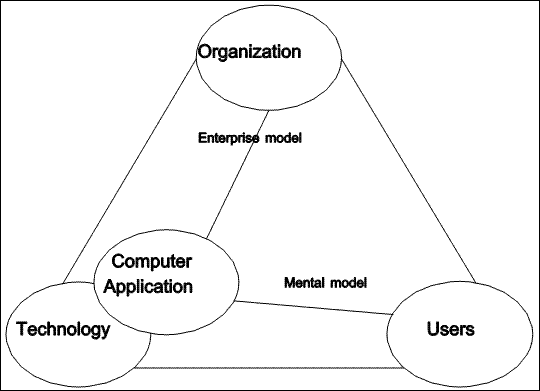
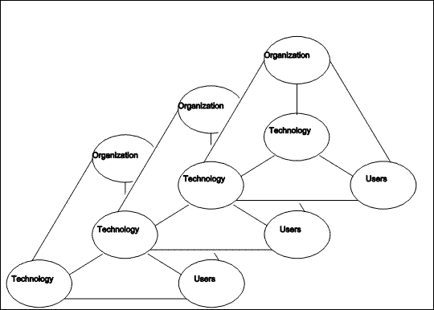

In this chapter, we consider the role played by the computer in the storage and use of data by people and organizations. We consider the phenomenon of persistence, and sketch a basic model for information storage and transfer over time and space. We introduce the BRETAM model (Gaines, 1990) for the introduction of technology into widespread use, and review existing technology in terms of this model. Finally, we consider how well existing technology satisfies the requirements identified in the previous chapter.
Data is a valuable asset in most organizations. Pursuing the analogy of data as an asset, Nolan (1973) points out that this asset is typically "frozen", by being locked into particular application programs. A decade later, Martin (1983) presents a detailed plan for organizing the data of an organization into a usable form. More recently, integration of available technologies into effective use in an office environment is still considered an area of research (Pernici, 1990).
Even though data is not consumed as it is used, its use will still need to be carefully controlled and audited. The organization will need to know where it comes from, and how it is used, by whom and for what purposes. In other words, the data of an organization will itself need to become the subject of a database. This meta database is a key technical component of the solution. It is not a new concept, having been called a "data dictionary" (Gray 1978), and more recently a "knowledge dictionary" (Davis 1989, Jansen 1990).
For information to persist, it must be represented in world one. This representation can then be replicated, interpreted, or re-presented. Replication improves the prospects for persistence by redundancy over time or space or both. Interpretation is necessary if the representation is to yield the information. Re-presentation is the simplest result of interpretation, in which the information which has been represented is simply presented again.
"Digital [representations of] information can be copied and recopied perfectly" (Rothenberg, 1995). This ought to give an advantage to this form of representation. However, replication ability does not imply ease of interpretation. Interpretation of digital representations requires not only access to a physical device capable of extracting a bit stream from a particular kind of recording medium, but, more importantly, requires knowledge of the coding scheme which was used to transform the original information into the representation. Unfortunately, "interpreting a bit stream depends on understanding its implicit structure, which cannot be explicitly represented in the stream" (Rothenberg, 1995).
In this section, we consider various means of representation and interpretation, especially as applied to the kind of data that is of importance to human organizations.
Information is generated naturally as a by-product of life processes. As a simple example, the concentration of a particular chemical in a cell. Much of it is volatile. This is because, while the information is available at a particular point in space and time, to be of any use it must be transmitted to something that cares. It must be valued. The ultimate value is survival; ultimate because only that which survives can survive (Dawkins, 1989).
Information is transmitted by messages, through some physical process. It tends to dissipate with distance and time. A spoken utterance goes out of existence at the instant it is complete (Ong, 1977). As sound waves move through space, they expand, so that the energy per volume decreases as the square of the distance. Very soon after its creation a sound is no longer discernable. Similarly, graphite marks on paper may soon be digested by bacteria or fungi, and engravings in stone can be eroded by wind and water.
Information is transmitted by changes produced in the physical world (Popper's (1972) first world). This is true whether we are speaking of transmission through time or through space. In order to survive dissipation, the message must be retransmitted or copied. In biological organisms this is eminently successful, in large part because the information encodes the construction of a vehicle to ensure the persistence of the message. This is an elegant solution which is bound to succeed, because success is its only business. In human organizations, oral histories and commonplaces (Ong, 1982) are further examples of persistence by repetition or copying. Writing is somewhat more successful, because it does not depend so much on a listener, and dissipation is much slower.
Information can be encoded in bit strings. A persistent information store is a device which, when presented with a bit string, modifies itself in some way so that at a later time it will produce the same bit string on demand. It must be accurate, allowing no changes in the stored bit string as time passes. The mechanism used to accomplish this does not have to be understood in order for it to be useful. In other words, it can be considered a black box.
Information stores can be classified by considering the nature of retrieval requests. What information must be presented to the store in order for it to return a desired bit string?
One possibility is what is known as a "surrogate" (Hughes, 1991). A surrogate is a unique identifier, generated by the information store as the result of a storage request. Like the key to a rented locker, it becomes available as soon as an item has been consigned to storage, and must be presented at the later time when the item is required.
Another option is that a part of the stored information may be presented to the information store. In response, the store will return the entire stored bit string. This can be accomplished by certain kinds of neural nets, and is a characteristic of text retrieval systems. Which part of the stored bit string must be presented, and how much of it is required may depend on the design of the information store.
It may be that as a part of the design of the information store, a particular portion of stored bit strings is designated as a key, and only this portion is required to retrieve the entire string.
To retrieve a stored message, something must be known about it. This may be a surrogate, some salient attribute, or some portion of its content.
Information storage is really just a coding and compression situation. A storer gives the black box a message and receives another message in response. This is presumably shorter than the stored message or nothing is gained. Then the set of shorter messages, together with the black box allows the generation of stored messages on demand.
If n is the number of distinct messages to be stored, the size of the handle must be at least log2n bits. The handles need not be extremely large: 30 bits can uniquely identify over a billion objects. A library call number is much shorter than a typical book.
The simplest imaginable (vacuous) information store is one which requires the entire desired bit string as a key, and returns it as the requested information.
An information store may respond destructively or nondestructively to a retrieval request. In the former case, a bit string can only be retrieved once; it will no longer be stored. In the latter, more usual, case a copy of the bit string may be delivered more than once.
What does an information store do when presented a bit string for storage which turns out to be identical with one already being stored? This may not be allowed. The two bit strings may both be stored, but essentially indistinguishable from each other, or they may be assigned distinct surrogates.
Can similar stored bit strings be examined in an arbitrary order? They may be available in the order they were stored. They may be available according to some ordering based on their surrogates, or according to various orderings of their content.
The bit strings held by an information store may be classified into categories. Uniqueness may be enforced within each category but not between categories. Indexing may be provided only within a category.
Can one bit string contain a reference to another bit string in the same information store? This cannot be forbidden so long as some kind of content addressing is available. In fact, since an arbitrary external address or surrogate can itself be encoded as a bit string, such internal cross referencing cannot be forbidden at all.
The information store would do well to manage this phenomenon if possible, to ensure that a bit string to which there exists a reference does in fact exist within the store.
In this section, we consider what it means for information to be persistent. What kinds of work must be done to create, modify, process, and retrieve data? The components of an information storage model are: one or more storers (agents which cause a bit string to be consigned to storage), one or more requesters (agents which retrieve bit strings from the information store), and the store itself. The information store must accept a bit string from a storer at one point in time, and return it to a requester at a later time.
In order to formulate a request, a requestor must hold the necessary information. How is this information passed from the storer to the requester? These two may be the same person, in which case human memory (itself an information store) is relied upon. Or a smaller and more manageable information store may be used to store the surrogate (such as a notebook).
An information store may be used in various manners. In a browsing model, a requester may simply examine various bit strings from the store until an interesting one is discovered, relying on serendipity. In a custodial model, the requester needs to present the surrogate, key, or some portion of a desired bit string, whereupon the information store produces it. In an indexed model, the information store is prepared to produce a stored bit string upon presentation of any one (or more) of a number of predetermined portions. In an expert model, the information storage system has reasoned about the information it contains, and is prepared to produce an appropriate bit string when presented with a problem which is within its domain of competence (Dik, 1986). In an agent model, the information storage system is actively acquiring information from its environment, and organizing it by framing hypotheses and testing them. In this model it functions much like a scientist (Shaw, 1980).
The kind of information which must be given the information store in order to retrieve a bit string of interest varies according to the kind of model. While browsing, the requester is using the policy of "I'll know it when I see it". In the custodian model, the requester must know the appropriate incantation. In the indexed model, the requester must be aware of one or more salient attributes of the desired bit string. An expert or an agent will respond to a question. An agent will respond to a statement which it finds interesting.
As an example, we will consider a library as an information store, with each book being considered a single bit string. In the browsing model, the requester simple moves along the shelves pulling interesting looking books and examining them. In custodial mode, the requester locates a book given its call number. In the indexed model, the requester may consult the card catalog. A small town library may not possess a card catalog, and the requester may need to turn to expert model and consult the librarian. In the agent model, the requester may engage the services of a research assistant.
Information storage is realized by modification of some part of the physical world. The first world supports the third world via the actions of second world agents (Popper, 1972). The modification must survive through time and/or space. A requester who is able to decode the modification to recover the message is required. The requester must care enough about the information to decode it. Again, the biological world is particularly elegant here; the decoding mechanism is virtually universal to all living things.
Gaines (1990) has proposed a model for the introduction of innovation into the marketplace. In this model, a technology progresses through six phases, each requiring about eight years. First comes a breakthrough (B), involving creative ideas produced in a trial and error environment. Next, the ideas are replicated (R) and validated by other researchers. There follows a period of empiricism (E) in which the experience gained with the ideas results in design rules. This leads to the development of underlying theories (T), which eventually are applied in a more automatic way (A). Finally, the technology reaches maturity (M) and is amenable to mass production.
According to the BRETAM model, product innovation occurs at the boundary between empiricism and theory, where experience with one technology is supported by the theory of previous technologies. The period from 1988 to 1996 is the time frame during which one might expect the development of a product incorporating experimental uses of inductive inference (now in phase E) into a knowledge-based system (T). Such a product would benefit from a state of the art human-computer interface, and would be based on the mature technologies of problem-oriented languages and virtual machine architecture.
As the next chapter indicates, Smalltalk is based upon a virtual machine, and implements a problem-oriented language in which an innovative human-computer interface was developed. It is also a good substrate to support the development of knowledge-based systems. Certainly, objects closely resemble frames, a standard knowledge representation device (Minsky, 1975). Also, the inheritance hierarchy is a way of encoding a certain kind of knowledge. Indeed Smalltalk has been used to create an expert system shell.
The relational database breakthrough occurred in the 1960's (Childs, 1968; Codd, 1970). A large body of theory was available by the 1980's (Maier, 1983). Based on the notion of storing information about the structure of a database in the database itself (Mark, 1985; Mark & Roussopoulos, 1986; Davis, 1989) a number of methodologies have been created to partially automate the specification of database structure. These design procedures are each based on models powerful enough to model the model itself (Nijssen & Halpin, 1989; Brough, 1992). This corresponds to the start of the automation phase of the BRETAM model, in which "theoretical models are made operational" (Gaines, 1990).
Relational database systems do not, however, meet our requirement of simple database design by novice computer users.
A wide range of technology is currently being deployed to manage data in organizations. On one dimension, these range from simple flat-file systems to free structured systems such as Lotus' Agenda. Most of the technology is record-based. Despite its limitations (Kent, 1979), relational database technology is capable of meeting our requirements. This is particularly true if variable length fields, and multimedia field types are incorporated into the model.
Judging from the commercial success of products such as dBase, a lot of mileage can be achieved using only flat files. The only technical requirement is random access to the file. The human interface requirement is achieved by a simple facility for defining the fields of each record in the file. Each record has an identical layout, with each field having a fixed offset within the record.
External indexes are added for two reasons: to allow associative addressing, and to impose an ordering on the records.
Relational databases are rapidly becoming the standard solution to the database needs of organizations. They can indeed be deployed as a virtual enterprise model, even in the case of very large organizations.
The standard interface is some version of SQL (Standard Query Language). This language was intended for use in formulating ad hoc queries, by people who are not database professionals. Simpler, graphically oriented or menu-driven front ends are widely available for SQL, showing that the language itself is not perceived to be directly useable by a broad population.
When there is no existing technological solution to an organization's data needs, it is always possible to use a computer programming language to construct a solution (assuming that the problem is tractable). Again, this is a domain for specialists.
|  |
| Figure 3.1 Creation of a computer application |
In Figure 3.1, the data-oriented computer application is depicted as emerging from available technology, in this case, DataPerfect. This creation is viewed a being primarily a technological activity, yet the importance of user and organization concerns is not neglected.
Virtually all of the technological solutions available today require specialized practitioners. While a few users are able to train themselves to use whatever facilities are available to them, most must queue up requests for their MIS department, leading to the expected bottleneck, and resulting in a perceived software crisis. As Nardi (1993) points out, the resulting backlog does not include "applications that people ... might want if they were not working in an environment of such overwhelmingly unsatisfied demand."
|  |
| Figure 3.2 Chain of technical products |
What is needed is a technology whose generational power will remain in the application, allowing the construction of a chain of technical products (see Figure 3.2). This is discussed in (Conrad & Bastian, 1991). By supplying a technology with a small number of well-chosen primitive operations, a simple computational model, and extension ability, we hope to enable people to satisfy a larger part of the need for end user applications than has been possible with existing technology.
Our hope is that computer mediated data might become a new kind of medium for the custodians and users of an organization's data. In the next chapter, we consider Smalltalk, which was introduced as a personal, dynamic media (Kay & Goldberg, 1977), as a potential solution to this need.
Copyright © March 8, 1995 Bruce Conrad